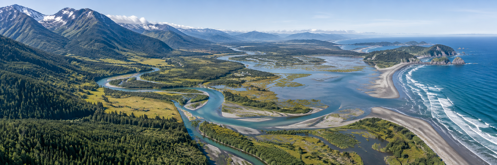

GEOAI · EARTH OBSERVATION · ENVIRONMENT
Understanding a changing Earth
through geospatial AI.
At the Environmental Intelligence Lab (EIL), we develop GeoAI, foundation models and multimodal learning methods to understand environmental and socio-ecological change. Led by Dr Ce Zhang, our group connects geospatial science, AI and environmental research at the University of Bristol.
Meet the groupResearch themes
Methods connected to environmental questionsGeoAI, foundation models & multimodal learning
Developing methods that bring together satellite, airborne, street-level and other geospatial observations.
Explore theme 02Remote sensing & environmental intelligence
Turning Earth observation data into information about landscapes and their change.
Explore theme 03Environmental change, ecosystems & climate hazards
Understanding ecosystem dynamics, flood hazards and the impacts of environmental change.
Explore theme 04Spatial decision intelligence
Connecting geospatial evidence with decisions about socio-ecological systems.
Explore themeRESEARCH HIGHLIGHT
What can nighttime lights tell us about urban resilience?
Our research examines how economic sectors within cities respond differently to disruption, using satellite observations of nighttime lights.
Explore selected publications ↗